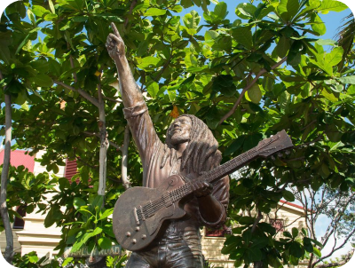

INHALE THE BLUES AND EXHALE THE MEMORIES

From incredible mountain views to cultural insights, biking joy to Jamaican food; this experience has it all!
The metropolitan that is Kingston, Jamaica bursts at the seams with spectacular sights as busy city residents
go about mixing work and play. It's a beautiful chaos waiting to be explored.
This is the cultural mecca of our island. The place to be if you want to experience the mesmerizing music and heady nightlife as you vibrate to the beat of the drums. You’ll also find fine art galleries, epicurean dining, amazing views in the cool hills above the city, and incredible beaches.
Could this be Jamaica's best-kept secret? We're the ONLY tour that gets you into the famous Blue Mountains; the cool, misty home of some of the most prized and expensive coffee in the world! Jamaica isn’t all beaches and coconut trees. Here, folks you bike past may be wearing sweaters.
This is a side of Jamaica your friends haven't seen, where the tallest peak is 1,500 feet higher than the biggest ski resort in France. Where wild hogs and the guinea pig-like coney roam in “elfin forest” below pine trees shrouded in mist.
Descend a gentle 4,000 feet down next to tangerine and soursop trees, with almost no peddling, ending up at a jungle waterfall and swimming hole. Sample Jamaica’s coffee and touch the beans growing in the field. Have a hearty Jamaican lunch. And ride the highest (1,000 feet), longest zipline in Jamaica.
HOTELS
There are plenty of hotels in Kingston to choose from. At the heart of all the action are several first-rate international hotel chains you may know. You'll also find many fabulous local options that offer the modern amenities of a cosmopolitan city served up with our mesmerizing Jamaican vibe. The business hub New Kingston is home to several of these accommodations that will have you mere footsteps from some of the most exquisite city attractions and exciting events. Skirting the town are a handful of spectacular guest accommodations that offer the experience of staying on the waterfront in well-manicured affluent neighborhoods or tucked away in the cool city hills. This is an excellent way to enjoy the bustling city and its quiet beauty simultaneously.
RESTURANTS
Kingston is the place to sample every type of food Jamaica has to offer. You'll love the array of swanky sports bars dishing up casual dining meals with a spicy Jamaican twist. The courtyard at Marketplace is one spot to treat yourself to a wide variety of Jamaica's finest eats. Here, you'll find Usain Bolt's Tracks and Records, the sprint icon's first sports bar, as well as a splendid gathering of fine dining restaurants offering dishes from Asian and European cultures. No matter what you're craving, there's a Kingston restaurant to satisfy your appetite.
WHAT TO DO IN KINGSTON

Golfing, beaches, fine art galleries, a bustling nightlife, colorful markets, and even more colorful people are just a few reasons to visit Kingston. There's no shortage of things to do in Kingston and nowhere else on the island will you feel the pulse of Jamaica quite like it beats here. To see Kingston's star attractions, start Downtown at the heart of it all. Visit the National Gallery of Jamaica to see the cultural exhibits on show here. Then walk through streets lined with sensational murals to dine at a local cafe. Enjoy the vibrant scene of the waterfront as children frolic and music blares from somewhere nearby. Take a quick ride to Port Royal, once dubbed the “wickedest city in the west,” to visit spectacular beaches at Lime Cay or eat the best seafood at Gloria’s. Venture uptown to visit the Hope Botanical Gardens, home to gorgeous gardens, alfresco dining, and an amphitheater that hosts regular reggae bands. The gardens are just up the road from the Bob Marley museum where he lived and recorded many of his famous songs.Get to know Kingston, the melting pot of Jamaica's finest offerings that will leave you wanting more.
Browse other parishes >
Westmoreland
Montego Bay
St. Ann